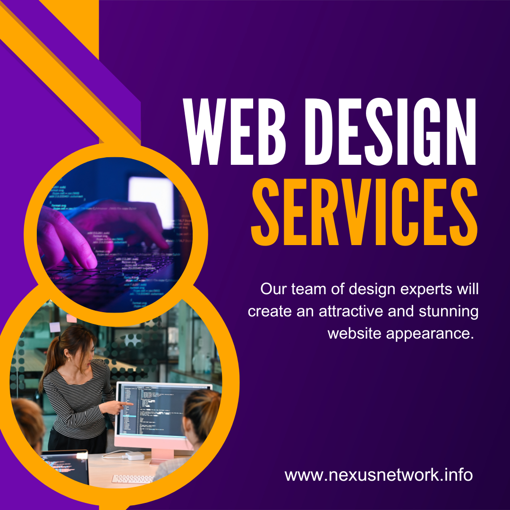

Web design is the process of creating websites. It encompasses the planning, designing, creating, and maintenance of websites. Web designers use a variety of skills, including graphic design, user experience design, and web development, to create websites that are both visually appealing and functional. There are many different aspects to web design, including: Visual design: This includes the use of colors, fonts, images, and other visual elements to create a visually appealing website. User experience (UX) design: This involves designing websites that are easy to use and navigate. UX designers consider the needs of the website's users when designing the site's layout, navigation, and overall functionality. Web development: This involves the coding of the website. Web developers use programming languages to create the website's structure and functionality. Content creation: This involves creating the content that will be displayed on the website. This content can include text, images, videos, and other media. Web designers need to have a strong understanding of all of these aspects in order to create effective websites. They also need to be familiar with the latest web technologies and trends. There are many different types of web designs, each with its own unique purpose. Some of the most common types of web designs include: Corporate websites: These websites are designed for businesses and organizations. They typically include information about the company's products or services, contact information, and a blog. Ecommerce websites: These websites are designed for online shopping. They allow users to browse and purchase products or services from a retailer's website. Personal websites: These websites are designed for individuals. They can be used to share personal information, photos, and blog posts. Portfolio websites: These websites are designed to showcase an individual's work. They typically include a collection of the individual's projects, as well as contact information and a resume. Web design is a constantly evolving field. As new technologies and trends emerge, web designers need to be able to adapt their skills and knowledge to stay ahead of the curve. Here are some of the most important factors to consider when designing a website: The target audience: Who are you designing the website for? What are their needs and expectations? The purpose of the website: What do you want the website to achieve? Do you want to sell products, provide information, or build brand awareness? The user experience: How easy is it for users to navigate the website? Is the content easy to find and understand? The visual design: Is the website visually appealing? Do the colors, fonts, and images work together to create a cohesive look? The technical aspects: Is the website compatible with different browsers and devices? Is it secure? By considering all of these factors, you can create a website that is both effective and visually appealing.
There are many reasons why our company is best for web design. Here are a few of the most important ones: We have a team of experienced and talented web designers. Our team has been designing websites for over 10 years, and we have a deep understanding of the latest web design trends and technologies. We are customer-focused. We understand that your website is an important part of your business, and we are committed to providing you with a website that meets your needs and exceeds your expectations. We offer a wide range of services. We can help you with everything from creating a new website from scratch to redesigning your existing website. We also offer a variety of additional services, such as SEO, web development, and content creation. We are affordable. We offer our services at a competitive price, and we are always willing to work with you to find a solution that fits your budget. In addition to these reasons, we are also committed to providing you with a high level of customer service. We will be there to answer your questions, help you with any problems you may have, and make sure that you are completely satisfied with your website. If you are looking for a web design company that can help you create a website that is both effective and visually appealing, then we encourage you to contact us. We would be happy to discuss your needs and provide you with a quote. Here are some of the specific benefits of working with our company: We will work with you to understand your needs and goals. We want to create a website that is tailored to your specific business and audience. We will use the latest web design trends and technologies. We want to create a website that is both visually appealing and functional. We will provide you with a website that is search engine optimized (SEO). This will help your website rank higher in search results, which will lead to more traffic. We will provide you with a website that is mobile-friendly. This means that your website will look good and be easy to use on all devices, including smartphones and tablets. We offer a satisfaction guarantee. We are confident that you will be happy with our work, but if you are not, we will make it right. We believe that our company is the best choice for web design because we offer a combination of experience, expertise, and customer service. We are committed to creating websites that are both effective and visually appealing, and we want to help you achieve your business goals.